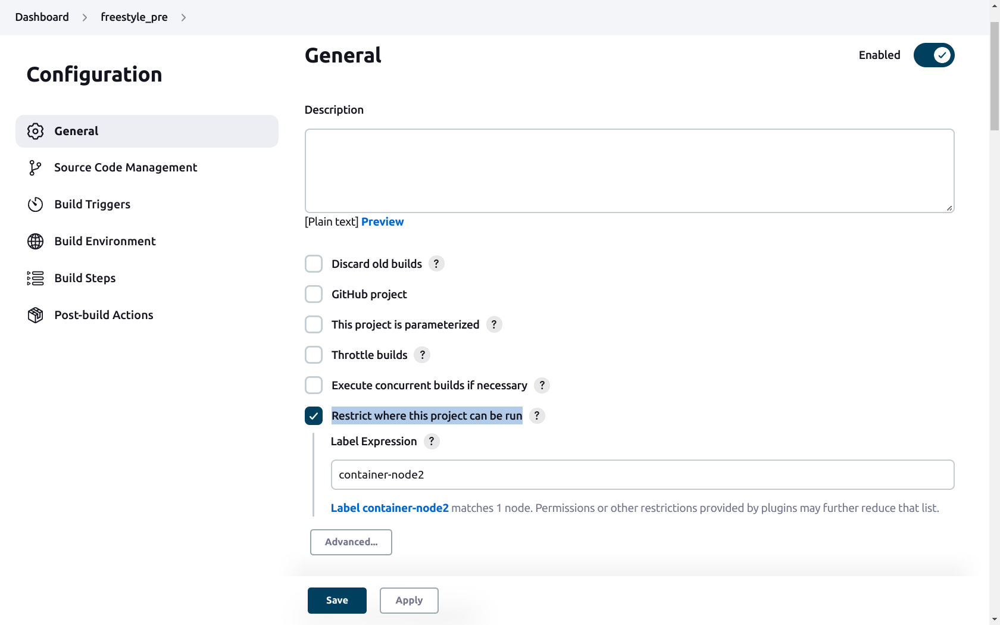

Multinode Pipelines
One can create multinode pipelines in jenkins freestyle pipeline job as well as in jenkins native pipeline job. In such a pipeline, different stages of the pipeline can run on separate nodes. The jenkins native pipeline job can have two types.
- Scripted Pipeline
- Declarative pipeline
For the sake of this documentation, two nodes are used: container-node and container-node2
Label
In jenkins, label specifies where the job or a stage of the job can run. In jenkins, a label can be explicitly added in the node's configuration so that each time that label is mentioned in a jenkins job, that specific node is used for building the job, or the name of the node can also be used as label in case if no label is added in the node.
Creating multinode pipelines in Jenkins native pipeline job
Scripted Pipeline
For creating a multinode pipeline with jenkins native scripted pipeline job, jenkinsfile can be tweaked. The keyword node can be used to specify the node in which the stages are going to run and this keyword can also be used in between stages. Following screenshot indicates a code in which first stage runs on node named container-node. While the second node runs on node named container-node2.
node ('container-node') {
stage ('*** Creating a directory in container-node ***'){
sh '''#!/bin/bash
mkdir newdir_container-node-$RANDOM
'''
}
stage ('*** Creating a directory in container-node2'){
node ('container-node2'){
sh'''#!/bin/bash
mkdir newdir_container-node2-$RANDOM
'''
}
}
}
Declarative pipeline
For a declarative pipeline the keyword label can be used in the agent block. This can either be done at the start of the pipeline after the keyword pipeline or it can be used inside the stages. The following code builds two stages each of which is built in separate node. The keyword none with agent means that the agent is not specified globally for each stage and it should be specified inside each stage.
pipeline {
agent none // Means no agent specified. This means each node will specify its own agent
stages {
stage('container-node') {
agent{
label "container-node" //Selecting container-node for this stage
}
steps {
sh '''#!/bin/bash
echo 'Hello container-node'
mkdir "newdir-container-node-$RANDOM"
'''
}
}
stage('container-node2'){
agent{
label "container-node2" //Selecting container-node2 for this stage
}
steps{
sh'''#!/bin/bash
echo ''Hello container-node2
mkdir "newdir-container-node2-$RANDOM"
'''
}
}
}
}
Creating multinode pipelines using Jenkins freestyle jobs
Jenkins freestyle jobs can be combined together by mentioning post-build jobs in the freestyle job settings. Freestyle jobs are customizable and offer more options than jenkins native pipeline jobs. Each job represents a stage and each stage has separate settings. One can use jenkins freestyle jobs to run on a separate node by selecting the option Restrict where this project can be run in the General section of the job's configuration. In the Label Expression, the node's name can be mentioned in which to run the job. The following image shows the option from job's configuration.

This can be done in all the job's configuration for the specified node.